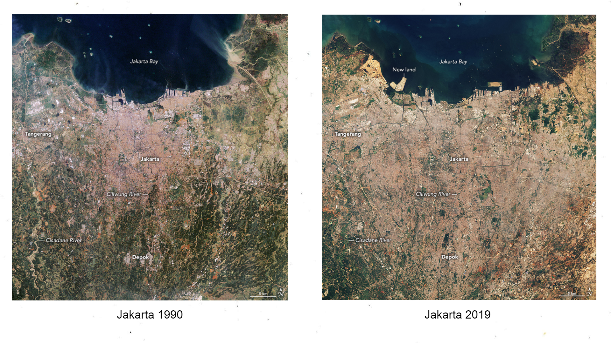
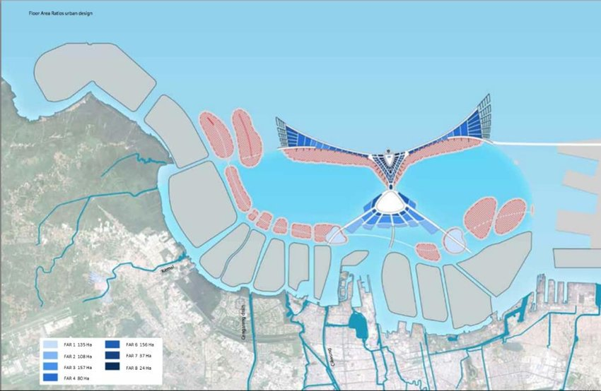

Week 4: Policy
Summary: Jakarta and the National Capital Integrated Coastal Development Plan
This week I have chosen to look at Jakarta, currently the capital city of Indonesia and home to over 10 million people in the immediate area and over 30 million people in the wider metropolitan area ‘Jabodetabek’. Sitting on swampy lands with 13 major rivers running through it, Jakarta has always been naturally vulnerable to floods which have gradually worsened since it’s occupation by the Dutch East India Company in the 17th century. This is mainly due to land subsidence caused by extensive ground water extraction meaning that Jakarta has quite literally dug itself into a hole. Currently, Jakarta is sinking at a rate of around 24cm a year and being located on the coast, it now also faces the issue of sea level rise caused by climate change. The image below shows just how much the coastline has changed in the past 39 years.

One of the worst floods occurred in 2007 where around 70% of the city was submerged with water after a period of heavy rain. Over 400,000 people were affected, 57 people died and economic losses totalled around USD 900 million (“A Retrospective View of Floods in Jakarta” n.d.). Since then, significant flooding has also occurred in 2013, 2014, 2020, 2021 and 2022. It has become so bad it was one of the reasons the government decided it would be moving the capital city to a new site in Kalimantan.
Policy is being constantly revised to try and solve the issue of flooding with one of the most significant plans in recent years being the National Capital Integrated Coastal Development Plan (NCICD) which sits in the wider Jakarta Coastal Defence Strategy. This includes strengthening its existing coastal defence infrastructure and the construction of a large new sea wall, lagoons and 17 artificial islands to tackle tidal flooding. The plan was initially going to cost around $40 billion.

Since its creation in 2012, the plan has been criticised heavily and opposed by many including NGO’s and local fishing communities resulting in in several revisions of the plan. As it sits today, the construction of 13 of the islands has been halted and the planned ‘Garuda-shaped’ sea wall has changed into just a normal sea wall.
Addressing the issue of flooding through this plan would be a step towards the following Sustainable Development Goals (SDGs):

However, there is potential the policy would move Jakarta away from the following SDGs as the development of hard infrastructure will further disrupt the coastal environment:

Applications
As I am also quite critical to the NCICD policy as I believe it is more of a fast, short-term solution, I will focus on the goal itself and explore how remote sensing can be used to mitigate severe tidal flood events and increase Jakarta’s resilience to such flood events.
In remote sensing, Synthetic Aperture Radar (SAR) data has proven to be useful in flood management, which involves the monitoring, prevention, and mitigation of floods. The main reason as to why it is so useful in flood management is its advantage of being able to ‘see’ through clouds. Several satellites have a SAR on board, one example being the European Space Agency’s Sentinel 1A/B.
Monitoring land subsidence
Differential Interferometry Synthetic Aperture Radar (DInSAR) observes changes between two SAR images taken at different times and is often used to measure land subsidence. An advantage of DInSAR is that it can detect centimeter-level surface displacements with each pixel representing the average displacement over an area of several square meters (Wempen 2020). In Jakarta this would be useful for monitoring future land subsidence which can help identify flood prone areas. Caló et al. (2017) used (DInSAR) along with data on land cover, climate and water storage to first map out areas of deformation and then correlate land subsidence to groundwater extraction.
Optimal site selection for mangroves
My favourite use of remotely sensed data to combat flood risks that I came across is for the optimal site selection for mangroves, which I think Jakarta’s coastline would benefit greatly from. Syahid et al. (2020) performed a weighted land suitability analysis using hydrodynamic, socio-economic, geomorphological, and climatic parameters to identify suitable areas for mangroves across southeast Asia. Restoring the mangrove forests that once existed along Jakarta’s coastline instead of a constructing a giant sea wall would help with flood management while also providing potential benefits to the local fishing communities.
Monitoring Sea Level Rise
To assess exposure and vulnerability to sea level rise, elevation data is a critical component which is often derived from digital elevation models (DEMs) (gesch2018?). Most DEMs have been produced using remote sensing data such as the Shuttle Radar Topography Mission (SRTM) which was launched to produce the first near global set of land elevation data. Duncan et al. (2018) used the SRTM DEM along with data on mangrove distribution from Landsat 5, data on biomass changes from SAR and data on sediment trends from ENVISAT-MERIS to assess mangrove forest resilience to sea level rise across West Africa and South Asia. SRTM was chosen for this study as it covers a global area to a high resolution. Other studies, often with specific research areas have used other DEMs, such as Anzidei et al. (2021) where it was decided a DEM derived from LiDAR data was the best option to assess shoreline changes overtime as SRTM DEMs have been shown to be higher than actual land surfaces (Su et al. 2015).
Reflection
This week allowed for a more in-depth exploration of how remote sensing can be used in a wider policy context to solve city-wide issues or move towards a common goal. With my interests I enjoyed the opportunity to investigate a pressing environmental issue in an urban context. I grew up in Indonesia and this made me reflect on Jakarta’s reputation with flooding and it’s impact on everyday life. Sometimes, just the signs of a potential downpour would be enough to stop you from going out because there was a high chance it would flood.
I can see how remote sensing could really help inform better decision and policy-making in the long-term and why it should be used when dealing with a complex environmental issue such as this one, and in a place that generally lacks sufficient local data. In the future, it would be interesting to see if you could use remotely sensed data to assess the impact of Jakarta’s NCICD policy by comparing remotely sensed data from before and after the plans completion. To assess this one could focus on change detection of sea level rise or land subsidence. If floods are persisting there could also be a possibility analyse flood impact assessments from before and after the implementation of the plan to see if the amount of land inundated has changed and how.